library(tidyverse) # manipulación de datos y visualización
library(tidymodels) # ecosistema de ML: rsample, recipes, parsnip, workflows, tune, yardstick
library(ranger) # motor para Random Forest
library(xgboost) # motor para Gradient Boosting
library(kknn) # motor para K-Nearest Neighbors
library(glmnet) # motor para regresión regularizada (LASSO, Ridge)
library(rpart) # motor para árboles de decisión
library(vip) # importancia de variables
library(pdp) # gráficos de dependencia parcial
set.seed(2026) # fijar semilla para reproducibilidadReferencia rápida: tidymodels en R
Esta página es una referencia rápida de los comandos de tidymodels y tidyverse que usamos en el curso. Cada sección incluye ejemplos ejecutables con datos simulados. Pueden copiar y pegar el código en RStudio para practicar.
La página sigue el flujo de trabajo típico de un proyecto de Machine Learning:
- Cargar y explorar los datos
- Dividir en entrenamiento y prueba
- Preprocesar con
recipe() - Especificar el modelo
- Combinar en un
workflow() - Ajustar y predecir
- Evaluar el rendimiento
- Validación cruzada y tuning
- Interpretar el modelo
1 Paquetes y datos simulados
1.1 Cargar paquetes
1.2 Crear datos simulados
Simulamos un dataset de 800 personas en 4 países latinoamericanos. La variable objetivo es voto (si la persona votó o no en la última elección).
n <- 800
datos <- tibble(
edad = round(rnorm(n, mean = 40, sd = 14)),
educacion_anios = round(pmin(pmax(rnorm(n, 11, 3), 0), 20)),
ingreso_hogar = round(rnorm(n, 1500, 600), 0),
confianza_gob = round(pmin(pmax(rnorm(n, 3, 1.2), 1), 7)),
interes_politica = round(pmin(pmax(rnorm(n, 3.5, 1.5), 1), 7)),
satisf_democracia = round(pmin(pmax(rnorm(n, 3.2, 1.3), 1), 7)),
pais = factor(sample(c("Uruguay", "Chile", "Colombia", "Mexico"),
n, replace = TRUE)),
zona = factor(sample(c("urbana", "rural"), n,
replace = TRUE, prob = c(0.7, 0.3))),
genero = factor(sample(c("mujer", "hombre"), n, replace = TRUE))
)
# Generar la variable objetivo con una relación realista
prob_voto <- plogis(
-2.5 +
0.02 * datos$edad +
0.06 * datos$educacion_anios +
0.12 * datos$interes_politica +
0.08 * datos$satisf_democracia +
0.0002 * datos$ingreso_hogar +
ifelse(datos$zona == "urbana", 0.2, 0) +
rnorm(n, 0, 0.5)
)
datos$voto <- factor(
ifelse(prob_voto > 0.5, "si", "no"),
levels = c("si", "no")
)
# Ver las primeras filas
head(datos)# A tibble: 6 × 10
edad educacion_anios ingreso_hogar confianza_gob interes_politica
<dbl> <dbl> <dbl> <dbl> <dbl>
1 47 6 1021 4 4
2 25 9 2177 3 5
3 42 7 1157 3 5
4 39 8 2193 5 4
5 31 13 1103 1 2
6 5 10 2236 3 4
# ℹ 5 more variables: satisf_democracia <dbl>, pais <fct>, zona <fct>,
# genero <fct>, voto <fct>2 Exploración de datos
2.1 Inspeccionar la estructura
# Dimensiones: filas x columnas
dim(datos)[1] 800 10# Resumen compacto de tipos y valores
glimpse(datos)Rows: 800
Columns: 10
$ edad <dbl> 47, 25, 42, 39, 31, 5, 30, 26, 42, 33, 34, 30, 37, 3…
$ educacion_anios <dbl> 6, 9, 7, 8, 13, 10, 14, 12, 11, 16, 9, 12, 20, 10, 1…
$ ingreso_hogar <dbl> 1021, 2177, 1157, 2193, 1103, 2236, 1272, 1480, 1714…
$ confianza_gob <dbl> 4, 3, 3, 5, 1, 3, 3, 1, 3, 4, 3, 3, 3, 3, 4, 3, 1, 5…
$ interes_politica <dbl> 4, 5, 5, 4, 2, 4, 1, 5, 3, 4, 2, 4, 4, 3, 3, 1, 7, 2…
$ satisf_democracia <dbl> 5, 3, 6, 1, 2, 4, 4, 4, 4, 4, 1, 6, 3, 4, 3, 4, 3, 3…
$ pais <fct> Chile, Chile, Mexico, Colombia, Uruguay, Colombia, C…
$ zona <fct> urbana, urbana, urbana, rural, urbana, rural, rural,…
$ genero <fct> mujer, mujer, mujer, hombre, hombre, mujer, hombre, …
$ voto <fct> si, no, si, si, no, no, no, no, no, si, no, no, si, …# Resumen estadístico
summary(datos) edad educacion_anios ingreso_hogar confianza_gob interes_politica
Min. : 4.0 Min. : 2.00 Min. :-705 Min. :1.000 Min. :1.000
1st Qu.:30.0 1st Qu.: 9.00 1st Qu.:1104 1st Qu.:2.000 1st Qu.:3.000
Median :41.0 Median :11.00 Median :1484 Median :3.000 Median :4.000
Mean :40.4 Mean :10.95 Mean :1487 Mean :2.955 Mean :3.546
3rd Qu.:49.0 3rd Qu.:13.00 3rd Qu.:1867 3rd Qu.:4.000 3rd Qu.:5.000
Max. :84.0 Max. :20.00 Max. :3019 Max. :6.000 Max. :7.000
satisf_democracia pais zona genero voto
Min. :1.000 Chile :202 rural :250 hombre:401 si:438
1st Qu.:2.000 Colombia:187 urbana:550 mujer :399 no:362
Median :3.000 Mexico :204
Mean :3.221 Uruguay :207
3rd Qu.:4.000
Max. :7.000 2.2 Tablas de frecuencia
# Contar observaciones por grupo
datos |> count(voto)# A tibble: 2 × 2
voto n
<fct> <int>
1 si 438
2 no 362datos |> count(pais, voto)# A tibble: 8 × 3
pais voto n
<fct> <fct> <int>
1 Chile si 110
2 Chile no 92
3 Colombia si 97
4 Colombia no 90
5 Mexico si 95
6 Mexico no 109
7 Uruguay si 136
8 Uruguay no 71# Proporción por grupo
datos |>
group_by(zona) |>
summarise(
n = n(),
prop_voto = mean(voto == "si"),
.groups = "drop"
)# A tibble: 2 × 3
zona n prop_voto
<fct> <int> <dbl>
1 rural 250 0.432
2 urbana 550 0.6 2.3 Estadísticos por grupo
datos |>
group_by(voto) |>
summarise(
edad_media = mean(edad),
edad_sd = sd(edad),
educ_media = mean(educacion_anios),
ingreso_medio = mean(ingreso_hogar),
.groups = "drop"
)# A tibble: 2 × 5
voto edad_media edad_sd educ_media ingreso_medio
<fct> <dbl> <dbl> <dbl> <dbl>
1 si 44.6 13.0 11.5 1550.
2 no 35.3 13.0 10.3 1411.2.4 Matriz de correlaciones
datos |>
select(where(is.numeric)) |>
cor() |>
round(2) edad educacion_anios ingreso_hogar confianza_gob
edad 1.00 -0.01 -0.05 0.01
educacion_anios -0.01 1.00 0.02 0.01
ingreso_hogar -0.05 0.02 1.00 -0.03
confianza_gob 0.01 0.01 -0.03 1.00
interes_politica 0.01 -0.01 -0.04 0.01
satisf_democracia -0.01 0.00 0.05 -0.03
interes_politica satisf_democracia
edad 0.01 -0.01
educacion_anios -0.01 0.00
ingreso_hogar -0.04 0.05
confianza_gob 0.01 -0.03
interes_politica 1.00 0.04
satisf_democracia 0.04 1.002.5 Valores faltantes
# Contar NAs por columna
colSums(is.na(datos)) edad educacion_anios ingreso_hogar confianza_gob
0 0 0 0
interes_politica satisf_democracia pais zona
0 0 0 0
genero voto
0 0 3 Visualización con ggplot2
3.1 Histograma
ggplot(datos, aes(x = edad, fill = voto)) +
geom_histogram(bins = 25, alpha = 0.6, position = "identity") +
scale_fill_manual(values = c("si" = "#1E3A5F", "no" = "#D4A843")) +
labs(title = "Distribución de edad por voto",
x = "Edad", y = "Frecuencia", fill = "Votó") +
theme_minimal()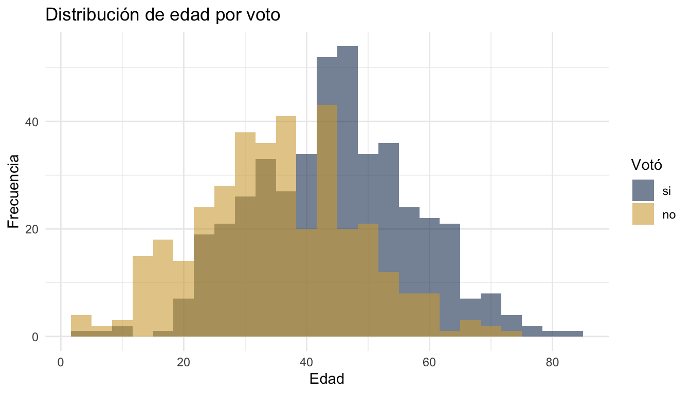
3.2 Boxplot
ggplot(datos, aes(x = voto, y = interes_politica, fill = voto)) +
geom_boxplot(alpha = 0.7) +
scale_fill_manual(values = c("si" = "#1E3A5F", "no" = "#D4A843")) +
labs(title = "Interés político por voto",
x = "Votó", y = "Interés político (1-7)") +
theme_minimal() +
theme(legend.position = "none")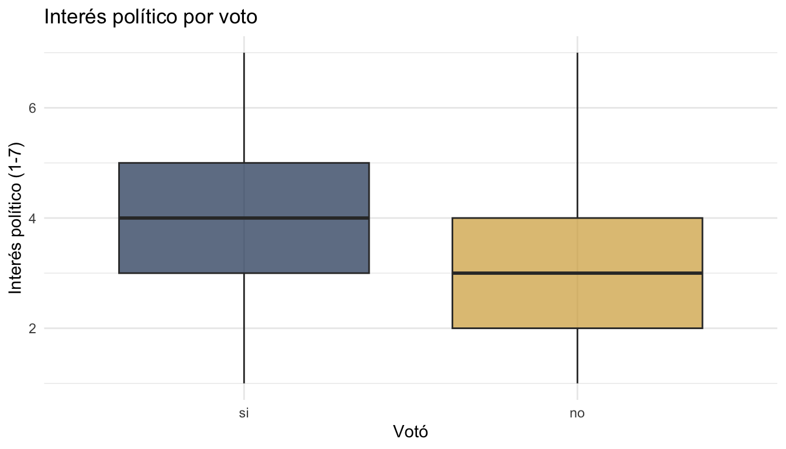
3.3 Barras agrupadas
datos |>
count(pais, voto) |>
ggplot(aes(x = pais, y = n, fill = voto)) +
geom_col(position = "dodge") +
scale_fill_manual(values = c("si" = "#1E3A5F", "no" = "#D4A843")) +
labs(title = "Voto por país",
x = "País", y = "Frecuencia", fill = "Votó") +
theme_minimal()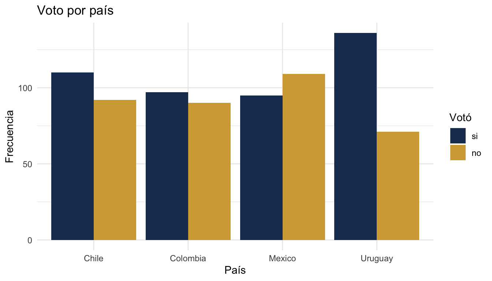
3.4 Scatter plot con línea de tendencia
ggplot(datos, aes(x = educacion_anios, y = ingreso_hogar)) +
geom_point(alpha = 0.4, colour = "#1E3A5F") +
geom_smooth(method = "lm", se = FALSE, colour = "#D4A843", linewidth = 1) +
labs(title = "Relación entre educación e ingreso",
x = "Años de educación", y = "Ingreso del hogar") +
theme_minimal()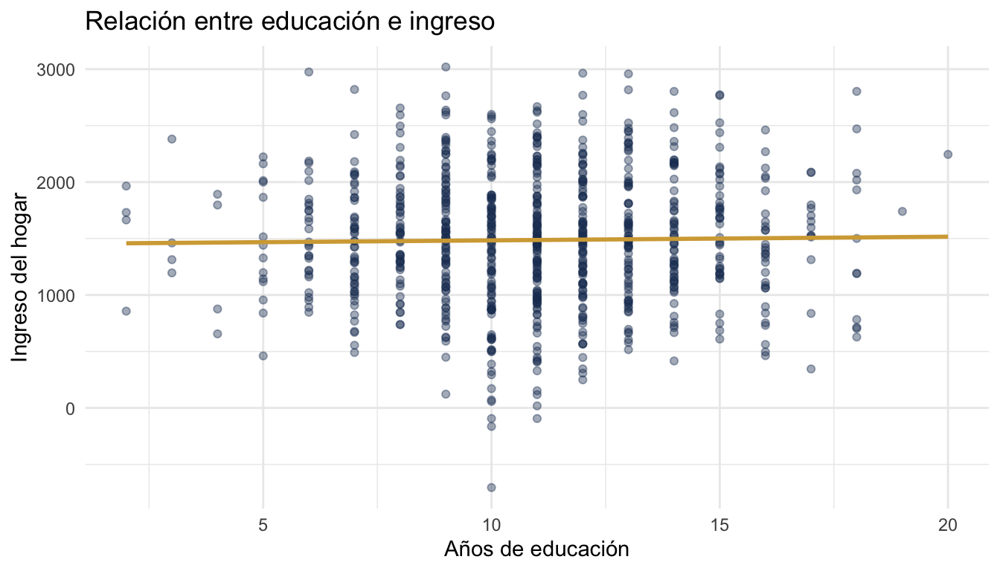
3.5 Facetas
ggplot(datos, aes(x = edad, fill = voto)) +
geom_histogram(bins = 20, alpha = 0.6, position = "identity") +
facet_wrap(~pais) +
scale_fill_manual(values = c("si" = "#1E3A5F", "no" = "#D4A843")) +
labs(title = "Distribución de edad por país y voto",
x = "Edad", y = "Frecuencia", fill = "Votó") +
theme_minimal()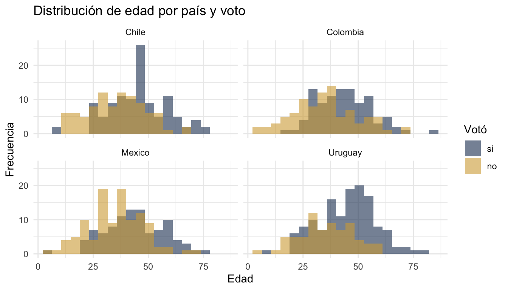
4 Manipulación de datos con tidyverse
4.1 select, filter, mutate
# Seleccionar columnas
datos |> select(edad, voto, pais)# A tibble: 800 × 3
edad voto pais
<dbl> <fct> <fct>
1 47 si Chile
2 25 no Chile
3 42 si Mexico
4 39 si Colombia
5 31 no Uruguay
6 5 no Colombia
7 30 no Chile
8 26 no Uruguay
9 42 no Uruguay
10 33 si Mexico
# ℹ 790 more rows# Filtrar filas
datos |> filter(edad > 30, pais == "Uruguay")# A tibble: 160 × 10
edad educacion_anios ingreso_hogar confianza_gob interes_politica
<dbl> <dbl> <dbl> <dbl> <dbl>
1 31 13 1103 1 2
2 42 11 1714 3 3
3 37 20 2245 3 4
4 49 12 1279 1 7
5 50 9 2030 2 2
6 35 18 2471 2 2
7 38 10 1468 3 6
8 49 10 1219 2 3
9 50 11 663 4 2
10 46 9 1980 4 4
# ℹ 150 more rows
# ℹ 5 more variables: satisf_democracia <dbl>, pais <fct>, zona <fct>,
# genero <fct>, voto <fct># Crear nuevas variables
datos |>
mutate(
grupo_edad = cut(edad, breaks = c(0, 30, 50, 100),
labels = c("joven", "adulto", "mayor")),
ingreso_log = log(ingreso_hogar + 1)
) |>
select(edad, grupo_edad, ingreso_hogar, ingreso_log) |>
head()# A tibble: 6 × 4
edad grupo_edad ingreso_hogar ingreso_log
<dbl> <fct> <dbl> <dbl>
1 47 adulto 1021 6.93
2 25 joven 2177 7.69
3 42 adulto 1157 7.05
4 39 adulto 2193 7.69
5 31 adulto 1103 7.01
6 5 joven 2236 7.714.2 group_by + summarise
datos |>
group_by(pais, zona) |>
summarise(
n = n(),
edad_media = mean(edad),
interes_medio = mean(interes_politica),
.groups = "drop"
)# A tibble: 8 × 5
pais zona n edad_media interes_medio
<fct> <fct> <int> <dbl> <dbl>
1 Chile rural 67 41.0 3.60
2 Chile urbana 135 41.1 3.54
3 Colombia rural 53 41.5 3.49
4 Colombia urbana 134 38.7 3.85
5 Mexico rural 60 39.5 3.47
6 Mexico urbana 144 39.2 3.5
7 Uruguay rural 70 40.1 3.51
8 Uruguay urbana 137 42.5 3.354.3 arrange, rename, case_when
# Ordenar
datos |> arrange(desc(edad)) |> head(5)# A tibble: 5 × 10
edad educacion_anios ingreso_hogar confianza_gob interes_politica
<dbl> <dbl> <dbl> <dbl> <dbl>
1 84 10 502 4 2
2 79 12 985 3 2
3 77 13 1417 4 5
4 76 10 1604 2 6
5 74 14 1832 5 4
# ℹ 5 more variables: satisf_democracia <dbl>, pais <fct>, zona <fct>,
# genero <fct>, voto <fct># Renombrar columnas
datos |> rename(country = pais, age = edad) |> head(3)# A tibble: 3 × 10
age educacion_anios ingreso_hogar confianza_gob interes_politica
<dbl> <dbl> <dbl> <dbl> <dbl>
1 47 6 1021 4 4
2 25 9 2177 3 5
3 42 7 1157 3 5
# ℹ 5 more variables: satisf_democracia <dbl>, country <fct>, zona <fct>,
# genero <fct>, voto <fct># Condiciones múltiples
datos |>
mutate(
nivel_confianza = case_when(
confianza_gob <= 2 ~ "baja",
confianza_gob <= 5 ~ "media",
TRUE ~ "alta"
)
) |>
count(nivel_confianza)# A tibble: 3 × 2
nivel_confianza n
<chr> <int>
1 alta 14
2 baja 285
3 media 5014.4 Reestructurar datos
# De ancho a largo (pivot_longer)
resumen <- datos |>
group_by(pais) |>
summarise(
edad_media = mean(edad),
ingreso_medio = mean(ingreso_hogar),
.groups = "drop"
)
resumen |>
pivot_longer(cols = c(edad_media, ingreso_medio),
names_to = "variable",
values_to = "valor")# A tibble: 8 × 3
pais variable valor
<fct> <chr> <dbl>
1 Chile edad_media 41.0
2 Chile ingreso_medio 1479.
3 Colombia edad_media 39.5
4 Colombia ingreso_medio 1470.
5 Mexico edad_media 39.3
6 Mexico ingreso_medio 1441.
7 Uruguay edad_media 41.7
8 Uruguay ingreso_medio 1554. # De largo a ancho (pivot_wider)
datos |>
count(pais, voto) |>
pivot_wider(names_from = voto, values_from = n)# A tibble: 4 × 3
pais si no
<fct> <int> <int>
1 Chile 110 92
2 Colombia 97 90
3 Mexico 95 109
4 Uruguay 136 715 División de datos (rsample)
5.1 Train/test split
# 75% entrenamiento, 25% prueba
# strata = voto mantiene la misma proporción de "si"/"no" en ambos conjuntos
division <- initial_split(datos, prop = 0.75, strata = voto)
datos_train <- training(division)
datos_test <- testing(division)
cat("Entrenamiento:", nrow(datos_train), "filas\n")Entrenamiento: 599 filascat("Prueba:", nrow(datos_test), "filas\n")Prueba: 201 filas# Verificar estratificación
datos_train |> count(voto) |> mutate(prop = n / sum(n))# A tibble: 2 × 3
voto n prop
<fct> <int> <dbl>
1 si 328 0.548
2 no 271 0.452datos_test |> count(voto) |> mutate(prop = n / sum(n))# A tibble: 2 × 3
voto n prop
<fct> <int> <dbl>
1 si 110 0.547
2 no 91 0.4535.2 Validación cruzada
# Crear 5 folds para validación cruzada
folds_5 <- vfold_cv(datos_train, v = 5, strata = voto)
folds_5# 5-fold cross-validation using stratification
# A tibble: 5 × 2
splits id
<list> <chr>
1 <split [478/121]> Fold1
2 <split [479/120]> Fold2
3 <split [479/120]> Fold3
4 <split [480/119]> Fold4
5 <split [480/119]> Fold5# Crear 10 folds
folds_10 <- vfold_cv(datos_train, v = 10, strata = voto)6 Preprocesamiento con recipes
6.1 Recipe básico
Un recipe() define qué transformaciones aplicar a los datos antes de entrenar un modelo.
receta <- recipe(voto ~ ., data = datos_train) |>
step_dummy(all_nominal_predictors()) |> # convertir categorías a dummies (0/1)
step_zv(all_predictors()) |> # eliminar columnas con varianza cero
step_normalize(all_numeric_predictors()) # estandarizar numéricos (media=0, sd=1)
receta6.2 Pasos de preprocesamiento disponibles
# Dummies: convierte factores en columnas binarias (one-hot encoding)
step_dummy(all_nominal_predictors())
# Normalizar: centra y escala variables numéricas
step_normalize(all_numeric_predictors())
# Varianza cero: elimina columnas constantes
step_zv(all_predictors())
# Categorías nuevas: protege contra niveles no vistos en datos nuevos
step_novel(all_nominal_predictors())
# Imputar con mediana: reemplaza NAs en numéricos
step_impute_median(all_numeric_predictors())
# Agrupar categorías raras: junta niveles poco frecuentes como "other"
step_other(all_nominal_predictors(), threshold = 0.05)
# Correlación alta: elimina predictores muy correlacionados
step_corr(all_numeric_predictors(), threshold = 0.9)
# Transformación logarítmica
step_log(ingreso_hogar, offset = 1)
# Interacciones entre variables
step_interact(terms = ~ edad:educacion_anios)
# Polinomios
step_poly(edad, degree = 2)6.3 Preparar y aplicar un recipe
# prep() estima los parámetros (medias, SDs, niveles) usando datos de entrenamiento
receta_prep <- prep(receta, training = datos_train)
# bake() aplica las transformaciones a cualquier dataset
datos_train_proc <- bake(receta_prep, new_data = datos_train)
datos_test_proc <- bake(receta_prep, new_data = datos_test)
# Ver resultado
head(datos_train_proc)# A tibble: 6 × 12
edad educacion_anios ingreso_hogar confianza_gob interes_politica
<dbl> <dbl> <dbl> <dbl> <dbl>
1 -1.11 -0.662 1.20 0.0206 0.995
2 -0.681 0.662 -0.661 -1.62 -1.06
3 -2.53 -0.331 1.30 0.0206 0.310
4 -0.752 0.992 -0.368 0.0206 -1.75
5 -1.04 0.331 -0.00796 -1.62 0.995
6 -0.467 -0.662 -0.0166 0.0206 -1.06
# ℹ 7 more variables: satisf_democracia <dbl>, voto <fct>, pais_Colombia <dbl>,
# pais_Mexico <dbl>, pais_Uruguay <dbl>, zona_urbana <dbl>,
# genero_mujer <dbl>7 Especificación de modelos (parsnip)
7.1 Regresión logística
spec_logit <- logistic_reg() |>
set_engine("glm") |>
set_mode("classification")
spec_logitLogistic Regression Model Specification (classification)
Computational engine: glm 7.2 Árbol de decisión
spec_arbol <- decision_tree(
tree_depth = 10, # profundidad máxima
min_n = 10, # mínimo de observaciones por nodo
cost_complexity = 0.01 # penalización por complejidad
) |>
set_engine("rpart") |>
set_mode("classification")
spec_arbolDecision Tree Model Specification (classification)
Main Arguments:
cost_complexity = 0.01
tree_depth = 10
min_n = 10
Computational engine: rpart 7.3 Random Forest
spec_rf <- rand_forest(
mtry = 4, # variables a considerar en cada split
trees = 500, # número de árboles
min_n = 10 # mínimo de observaciones por nodo
) |>
set_engine("ranger", importance = "impurity") |>
set_mode("classification")
spec_rfRandom Forest Model Specification (classification)
Main Arguments:
mtry = 4
trees = 500
min_n = 10
Engine-Specific Arguments:
importance = impurity
Computational engine: ranger 7.4 XGBoost (Gradient Boosting)
spec_xgb <- boost_tree(
trees = 500, # número de árboles
tree_depth = 6, # profundidad de cada árbol
learn_rate = 0.01, # tasa de aprendizaje (shrinkage)
min_n = 10 # mínimo de observaciones por nodo
) |>
set_engine("xgboost") |>
set_mode("classification")
spec_xgbBoosted Tree Model Specification (classification)
Main Arguments:
trees = 500
min_n = 10
tree_depth = 6
learn_rate = 0.01
Computational engine: xgboost 7.5 K-Nearest Neighbors (KNN)
spec_knn <- nearest_neighbor(
neighbors = 5 # número de vecinos (k)
) |>
set_engine("kknn") |>
set_mode("classification")
spec_knnK-Nearest Neighbor Model Specification (classification)
Main Arguments:
neighbors = 5
Computational engine: kknn 7.6 Regresión regularizada (LASSO, Ridge, Elastic Net)
# LASSO (mixture = 1): selecciona variables, pone coeficientes en cero
spec_lasso <- logistic_reg(penalty = 0.01, mixture = 1) |>
set_engine("glmnet") |>
set_mode("classification")
# Ridge (mixture = 0): encoge coeficientes pero no los elimina
spec_ridge <- logistic_reg(penalty = 0.01, mixture = 0) |>
set_engine("glmnet") |>
set_mode("classification")
# Elastic Net (mixture entre 0 y 1): combinación de ambos
spec_enet <- logistic_reg(penalty = 0.01, mixture = 0.5) |>
set_engine("glmnet") |>
set_mode("classification")7.7 Modelos de regresión (variable continua)
# Los mismos modelos funcionan para regresión, cambiando set_mode()
spec_lineal <- linear_reg() |>
set_engine("lm") |>
set_mode("regression")
spec_rf_reg <- rand_forest(mtry = 4, trees = 500) |>
set_engine("ranger") |>
set_mode("regression")
spec_xgb_reg <- boost_tree(trees = 500, learn_rate = 0.01) |>
set_engine("xgboost") |>
set_mode("regression")8 Workflows
8.1 Crear y ajustar un workflow
Un workflow() combina un recipe y un modelo en un solo objeto que se puede ajustar, predecir y evaluar.
# Crear workflow
wf_logit <- workflow() |>
add_recipe(receta) |>
add_model(spec_logit)
wf_logit══ Workflow ════════════════════════════════════════════════════════════════════
Preprocessor: Recipe
Model: logistic_reg()
── Preprocessor ────────────────────────────────────────────────────────────────
3 Recipe Steps
• step_dummy()
• step_zv()
• step_normalize()
── Model ───────────────────────────────────────────────────────────────────────
Logistic Regression Model Specification (classification)
Computational engine: glm # Ajustar el workflow a los datos de entrenamiento
ajuste_logit <- fit(wf_logit, data = datos_train)8.2 Predecir
# Predecir clases
pred_clase <- predict(ajuste_logit, new_data = datos_test)
head(pred_clase)# A tibble: 6 × 1
.pred_class
<fct>
1 si
2 no
3 si
4 no
5 si
6 si # Predecir probabilidades
pred_prob <- predict(ajuste_logit, new_data = datos_test, type = "prob")
head(pred_prob)# A tibble: 6 × 2
.pred_si .pred_no
<dbl> <dbl>
1 0.605 0.395
2 0.408 0.592
3 0.861 0.139
4 0.176 0.824
5 0.580 0.420
6 0.953 0.0471# Combinar predicciones con datos reales
pred_logit <- bind_cols(
datos_test |> select(voto),
pred_clase,
pred_prob
)
head(pred_logit)# A tibble: 6 × 4
voto .pred_class .pred_si .pred_no
<fct> <fct> <dbl> <dbl>
1 no si 0.605 0.395
2 si no 0.408 0.592
3 no si 0.861 0.139
4 no no 0.176 0.824
5 no si 0.580 0.420
6 si si 0.953 0.04718.3 Múltiples workflows
Los árboles de decisión, Random Forest y XGBoost no necesitan normalización (son invariantes a la escala). En la práctica, conviene usar un recipe más simple para estos modelos:
# Recipe para modelos basados en árboles (sin normalización)
receta_arbol <- recipe(voto ~ ., data = datos_train) |>
step_dummy(all_nominal_predictors()) |>
step_zv(all_predictors())
# Crear workflows: receta completa para logística, receta simple para árboles
wf_rf <- workflow() |> add_recipe(receta_arbol) |> add_model(spec_rf)
wf_xgb <- workflow() |> add_recipe(receta_arbol) |> add_model(spec_xgb)
wf_arbol <- workflow() |> add_recipe(receta_arbol) |> add_model(spec_arbol)
# Ajustar todos
ajuste_rf <- fit(wf_rf, data = datos_train)
ajuste_xgb <- fit(wf_xgb, data = datos_train)
ajuste_arbol <- fit(wf_arbol, data = datos_train)9 Evaluación de modelos (yardstick)
9.1 Métricas individuales
# Accuracy: proporción de predicciones correctas
accuracy(pred_logit, truth = voto, estimate = .pred_class)# A tibble: 1 × 3
.metric .estimator .estimate
<chr> <chr> <dbl>
1 accuracy binary 0.697# AUC: área bajo la curva ROC (requiere probabilidades)
roc_auc(pred_logit, truth = voto, .pred_si)# A tibble: 1 × 3
.metric .estimator .estimate
<chr> <chr> <dbl>
1 roc_auc binary 0.744# Precision: de los que predije como "si", cuántos realmente son "si"
precision(pred_logit, truth = voto, estimate = .pred_class)# A tibble: 1 × 3
.metric .estimator .estimate
<chr> <chr> <dbl>
1 precision binary 0.717# Recall: de los que realmente son "si", cuántos identifiqué correctamente
recall(pred_logit, truth = voto, estimate = .pred_class)# A tibble: 1 × 3
.metric .estimator .estimate
<chr> <chr> <dbl>
1 recall binary 0.736# F1-score: media armónica de precision y recall
f_meas(pred_logit, truth = voto, estimate = .pred_class)# A tibble: 1 × 3
.metric .estimator .estimate
<chr> <chr> <dbl>
1 f_meas binary 0.7269.2 Múltiples métricas a la vez
# Definir un conjunto de métricas
mis_metricas <- metric_set(accuracy, roc_auc, precision, recall, f_meas)
# Calcular todas a la vez
mis_metricas(pred_logit, truth = voto, estimate = .pred_class, .pred_si)# A tibble: 5 × 3
.metric .estimator .estimate
<chr> <chr> <dbl>
1 accuracy binary 0.697
2 precision binary 0.717
3 recall binary 0.736
4 f_meas binary 0.726
5 roc_auc binary 0.7449.3 Matriz de confusión
# Crear la matriz
cm <- conf_mat(pred_logit, truth = voto, estimate = .pred_class)
cm Truth
Prediction si no
si 81 32
no 29 59# Visualizar como heatmap
autoplot(cm, type = "heatmap") +
labs(title = "Matriz de confusión: regresión logística")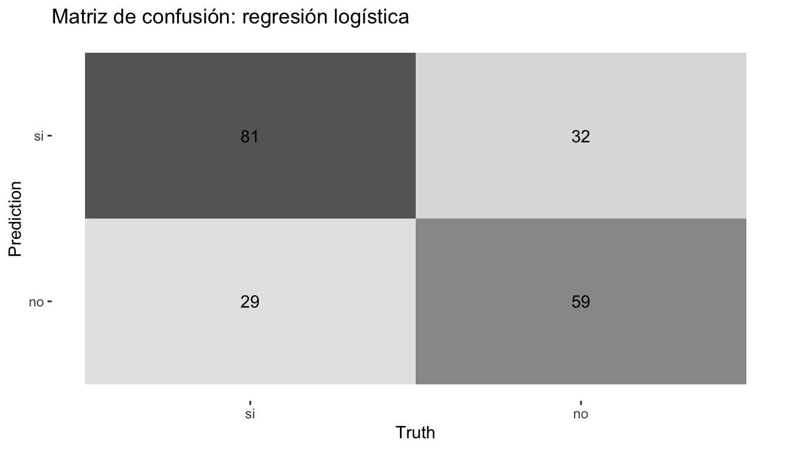
# Obtener todas las métricas de la matriz
summary(cm)# A tibble: 13 × 3
.metric .estimator .estimate
<chr> <chr> <dbl>
1 accuracy binary 0.697
2 kap binary 0.386
3 sens binary 0.736
4 spec binary 0.648
5 ppv binary 0.717
6 npv binary 0.670
7 mcc binary 0.386
8 j_index binary 0.385
9 bal_accuracy binary 0.692
10 detection_prevalence binary 0.562
11 precision binary 0.717
12 recall binary 0.736
13 f_meas binary 0.7269.4 Curva ROC
# Calcular la curva
curva_roc <- roc_curve(pred_logit, truth = voto, .pred_si)
# Graficar
autoplot(curva_roc) +
labs(title = "Curva ROC: regresión logística")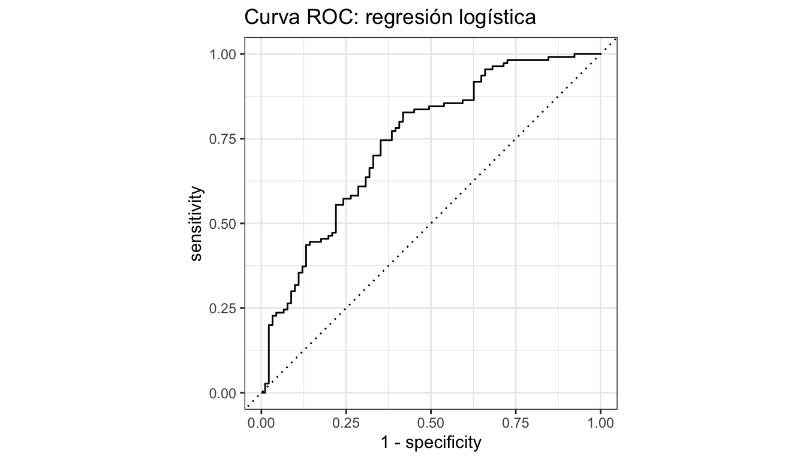
9.5 Comparar modelos
# Función auxiliar para calcular métricas de un modelo ajustado
calcular_metricas <- function(ajuste, datos_test, nombre) {
pred <- bind_cols(
datos_test |> select(voto),
predict(ajuste, new_data = datos_test),
predict(ajuste, new_data = datos_test, type = "prob")
)
metricas <- mis_metricas(pred, truth = voto,
estimate = .pred_class, .pred_si)
metricas |> mutate(modelo = nombre)
}
# Calcular para cada modelo
comparacion <- bind_rows(
calcular_metricas(ajuste_logit, datos_test, "Logística"),
calcular_metricas(ajuste_rf, datos_test, "Random Forest"),
calcular_metricas(ajuste_xgb, datos_test, "XGBoost"),
calcular_metricas(ajuste_arbol, datos_test, "Árbol")
)
# Tabla comparativa
comparacion |>
select(modelo, .metric, .estimate) |>
pivot_wider(names_from = .metric, values_from = .estimate) |>
arrange(desc(roc_auc))# A tibble: 4 × 6
modelo accuracy precision recall f_meas roc_auc
<chr> <dbl> <dbl> <dbl> <dbl> <dbl>
1 Logística 0.697 0.717 0.736 0.726 0.744
2 XGBoost 0.662 0.684 0.709 0.696 0.721
3 Random Forest 0.672 0.693 0.718 0.705 0.721
4 Árbol 0.637 0.655 0.709 0.681 0.6629.6 Curvas ROC superpuestas
# Preparar predicciones de cada modelo
roc_todos <- bind_rows(
roc_curve(
bind_cols(datos_test |> select(voto),
predict(ajuste_logit, datos_test, type = "prob")),
truth = voto, .pred_si
) |> mutate(modelo = "Logística"),
roc_curve(
bind_cols(datos_test |> select(voto),
predict(ajuste_rf, datos_test, type = "prob")),
truth = voto, .pred_si
) |> mutate(modelo = "Random Forest"),
roc_curve(
bind_cols(datos_test |> select(voto),
predict(ajuste_xgb, datos_test, type = "prob")),
truth = voto, .pred_si
) |> mutate(modelo = "XGBoost")
)
ggplot(roc_todos, aes(x = 1 - specificity, y = sensitivity, colour = modelo)) +
geom_path(linewidth = 1) +
geom_abline(linetype = "dashed", colour = "grey50") +
scale_colour_manual(values = c("Logística" = "#1E3A5F",
"Random Forest" = "#D4A843",
"XGBoost" = "#B8922E")) +
labs(title = "Curvas ROC comparadas",
x = "1 - Especificidad", y = "Sensibilidad", colour = "Modelo") +
coord_equal() +
theme_minimal()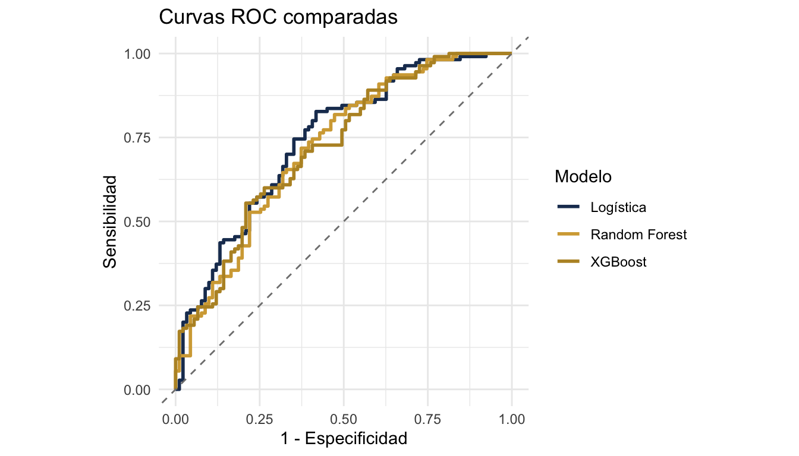
10 Coeficientes e interpretación de regresión logística
10.1 Extraer y visualizar coeficientes
# Extraer coeficientes en formato tidy
coefs <- tidy(ajuste_logit) |>
mutate(odds_ratio = exp(estimate)) |>
arrange(desc(abs(statistic)))
coefs# A tibble: 12 × 6
term estimate std.error statistic p.value odds_ratio
<chr> <dbl> <dbl> <dbl> <dbl> <dbl>
1 edad -0.911 0.112 -8.16 3.37e-16 0.402
2 educacion_anios -0.542 0.105 -5.18 2.26e- 7 0.581
3 zona_urbana -0.501 0.1000 -5.01 5.43e- 7 0.606
4 interes_politica -0.421 0.102 -4.13 3.60e- 5 0.656
5 satisf_democracia -0.414 0.102 -4.08 4.55e- 5 0.661
6 ingreso_hogar -0.384 0.102 -3.78 1.56e- 4 0.681
7 (Intercept) -0.277 0.0987 -2.80 5.05e- 3 0.758
8 pais_Uruguay -0.293 0.124 -2.35 1.86e- 2 0.746
9 confianza_gob -0.173 0.0978 -1.77 7.63e- 2 0.841
10 pais_Mexico 0.161 0.121 1.32 1.85e- 1 1.17
11 genero_mujer -0.0671 0.100 -0.669 5.04e- 1 0.935
12 pais_Colombia 0.0383 0.118 0.326 7.44e- 1 1.04 # Visualizar coeficientes (sin intercepto)
coefs |>
filter(term != "(Intercept)") |>
ggplot(aes(x = reorder(term, estimate), y = estimate)) +
geom_col(fill = "#1E3A5F", alpha = 0.8) +
geom_hline(yintercept = 0, linetype = "dashed") +
coord_flip() +
labs(title = "Coeficientes de la regresión logística",
x = "", y = "Coeficiente (log-odds)") +
theme_minimal()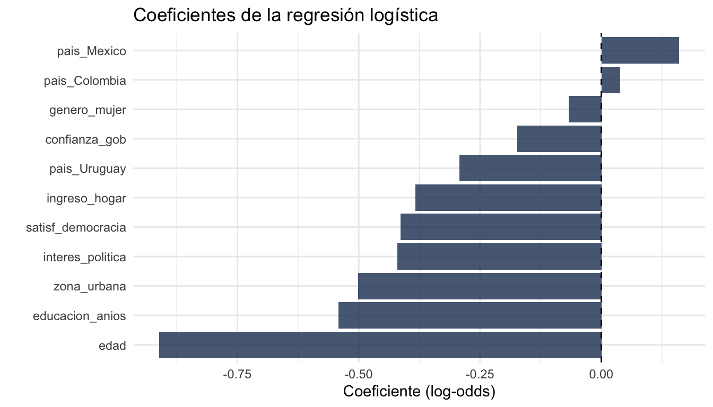
11 Validación cruzada y tuning de hiperparámetros
11.1 Tuning con Random Forest
# Especificar qué hiperparámetros ajustar con tune()
spec_rf_tune <- rand_forest(
mtry = tune(), # se va a buscar el mejor valor
trees = 500,
min_n = tune() # se va a buscar el mejor valor
) |>
set_engine("ranger", importance = "impurity") |>
set_mode("classification")
# Crear workflow con el modelo tunable (usamos receta_arbol, sin normalización)
wf_rf_tune <- workflow() |>
add_recipe(receta_arbol) |>
add_model(spec_rf_tune)11.2 Grilla regular
# Crear grilla de combinaciones de hiperparámetros
grilla_regular <- grid_regular(
mtry(range = c(2, 8)), # probar de 2 a 8 variables por split
min_n(range = c(5, 30)), # probar de 5 a 30 obs mínimas por nodo
levels = 5 # 5 valores por parámetro = 25 combinaciones
)
grilla_regular# A tibble: 25 × 2
mtry min_n
<int> <int>
1 2 5
2 3 5
3 5 5
4 6 5
5 8 5
6 2 11
7 3 11
8 5 11
9 6 11
10 8 11
# ℹ 15 more rows11.3 Grilla aleatoria
# Alternativa: muestrear combinaciones al azar
grilla_random <- grid_random(
mtry(range = c(2, 8)),
min_n(range = c(5, 30)),
size = 20 # 20 combinaciones aleatorias
)
grilla_random# A tibble: 19 × 2
mtry min_n
<int> <int>
1 2 9
2 6 21
3 4 20
4 8 28
5 6 7
6 8 17
7 4 10
8 6 20
9 3 21
10 2 12
11 7 5
12 8 14
13 6 18
14 6 28
15 5 17
16 3 14
17 6 26
18 3 25
19 4 1511.4 Ejecutar el tuning
# Buscar la mejor combinación usando validación cruzada
resultados_tune <- tune_grid(
wf_rf_tune,
resamples = folds_5,
grid = grilla_regular,
metrics = metric_set(roc_auc, accuracy)
)
# Ver resultados
collect_metrics(resultados_tune)# A tibble: 50 × 8
mtry min_n .metric .estimator mean n std_err .config
<int> <int> <chr> <chr> <dbl> <int> <dbl> <chr>
1 2 5 accuracy binary 0.670 5 0.0215 pre0_mod01_post0
2 2 5 roc_auc binary 0.745 5 0.0157 pre0_mod01_post0
3 2 11 accuracy binary 0.680 5 0.0230 pre0_mod02_post0
4 2 11 roc_auc binary 0.754 5 0.0149 pre0_mod02_post0
5 2 17 accuracy binary 0.678 5 0.0199 pre0_mod03_post0
6 2 17 roc_auc binary 0.754 5 0.0152 pre0_mod03_post0
7 2 23 accuracy binary 0.673 5 0.0221 pre0_mod04_post0
8 2 23 roc_auc binary 0.755 5 0.0155 pre0_mod04_post0
9 2 30 accuracy binary 0.690 5 0.0252 pre0_mod05_post0
10 2 30 roc_auc binary 0.759 5 0.0143 pre0_mod05_post0
# ℹ 40 more rows11.5 Visualizar resultados del tuning
autoplot(resultados_tune) +
labs(title = "Resultados del tuning de Random Forest") +
theme_minimal()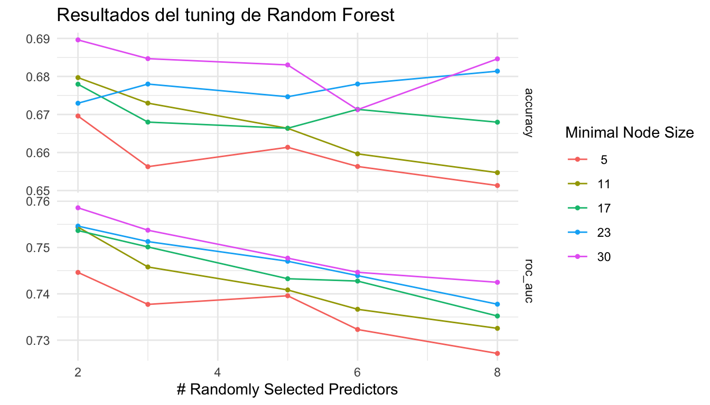
11.6 Seleccionar el mejor modelo
# Elegir la combinación con el mejor AUC
mejor <- select_best(resultados_tune, metric = "roc_auc")
mejor# A tibble: 1 × 3
mtry min_n .config
<int> <int> <chr>
1 2 30 pre0_mod05_post0# Alternativa: elegir el modelo más simple dentro de 1 error estándar del mejor
mejor_1se <- select_by_one_std_err(resultados_tune,
metric = "roc_auc",
mtry, min_n)
mejor_1se# A tibble: 1 × 3
mtry min_n .config
<int> <int> <chr>
1 2 5 pre0_mod01_post011.7 Finalizar y ajustar el modelo final
# Aplicar los mejores hiperparámetros al workflow
wf_rf_final <- finalize_workflow(wf_rf_tune, mejor)
# Ajustar el modelo final con todos los datos de entrenamiento
ajuste_rf_final <- fit(wf_rf_final, data = datos_train)
# Evaluar en datos de prueba
pred_rf_final <- bind_cols(
datos_test |> select(voto),
predict(ajuste_rf_final, new_data = datos_test),
predict(ajuste_rf_final, new_data = datos_test, type = "prob")
)
mis_metricas(pred_rf_final, truth = voto,
estimate = .pred_class, .pred_si)# A tibble: 5 × 3
.metric .estimator .estimate
<chr> <chr> <dbl>
1 accuracy binary 0.662
2 precision binary 0.681
3 recall binary 0.718
4 f_meas binary 0.699
5 roc_auc binary 0.73011.8 last_fit: ajustar y evaluar en un solo paso
# last_fit() ajusta en el training set y evalúa en el test set automáticamente
resultado_final <- last_fit(wf_rf_final, split = division)
# Métricas
collect_metrics(resultado_final)# A tibble: 3 × 4
.metric .estimator .estimate .config
<chr> <chr> <dbl> <chr>
1 accuracy binary 0.667 pre0_mod0_post0
2 roc_auc binary 0.724 pre0_mod0_post0
3 brier_class binary 0.213 pre0_mod0_post0# Predicciones
collect_predictions(resultado_final) |> head()# A tibble: 6 × 7
.pred_class .pred_si .pred_no id voto .row .config
<fct> <dbl> <dbl> <chr> <fct> <int> <chr>
1 si 0.572 0.428 train/test split no 9 pre0_mod0_post0
2 no 0.466 0.534 train/test split si 10 pre0_mod0_post0
3 si 0.687 0.313 train/test split no 12 pre0_mod0_post0
4 no 0.289 0.711 train/test split no 14 pre0_mod0_post0
5 si 0.556 0.444 train/test split no 16 pre0_mod0_post0
6 si 0.811 0.189 train/test split si 26 pre0_mod0_post012 Importancia de variables (VIP)
12.1 Gráfico de importancia
# Extraer el modelo ajustado del workflow
modelo_rf <- extract_fit_parsnip(ajuste_rf_final)
# Crear gráfico VIP
vip(modelo_rf, num_features = 10) +
labs(title = "Importancia de variables (Random Forest)") +
theme_minimal()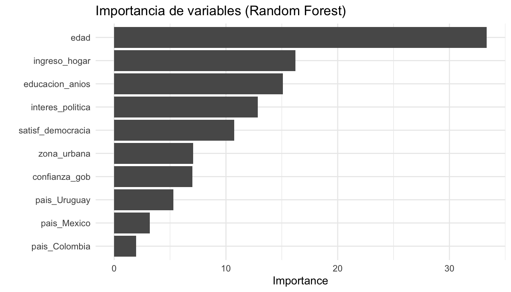
13 Partial Dependence Plots (PDP)
Los PDPs muestran cómo cambia la predicción promedio cuando variamos una variable, manteniendo las demás constantes.
# Necesitamos el modelo de ranger directamente y los datos preprocesados
modelo_ranger <- extract_fit_engine(ajuste_rf_final)
datos_baked <- bake(prep(receta_arbol), new_data = datos_train)
# PDP para interes_politica
pdp_interes <- partial(
modelo_ranger,
pred.var = "interes_politica",
train = datos_baked,
prob = TRUE,
which.class = 1 # clase "si"
)
# Graficar
ggplot(pdp_interes, aes(x = interes_politica, y = yhat)) +
geom_line(colour = "#1E3A5F", linewidth = 1.2) +
labs(title = "PDP: efecto del interés político sobre P(voto = si)",
x = "Interés político", y = "Probabilidad predicha de votar") +
theme_minimal()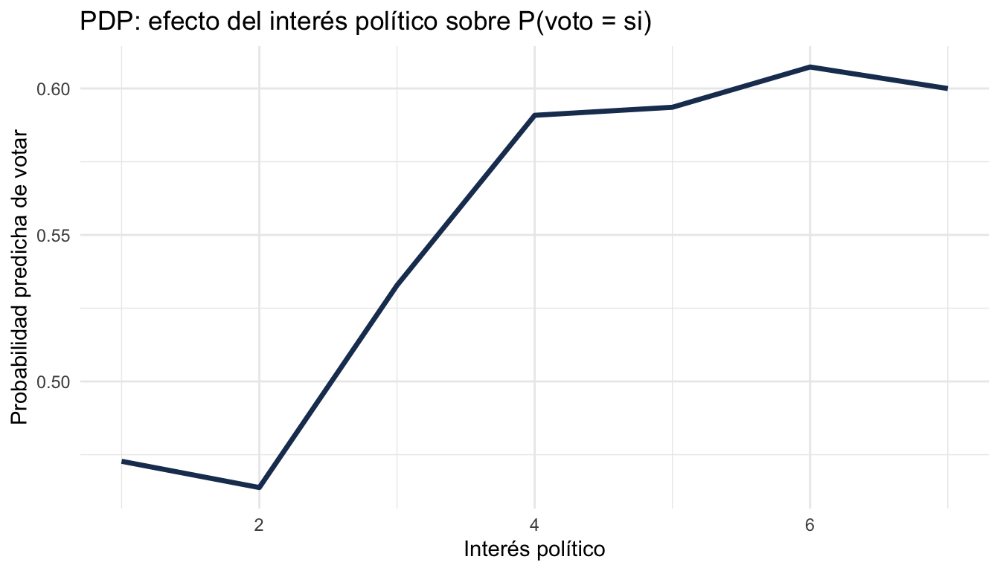
# PDP para educacion_anios
pdp_educ <- partial(
modelo_ranger,
pred.var = "educacion_anios",
train = datos_baked,
prob = TRUE,
which.class = 1
)
ggplot(pdp_educ, aes(x = educacion_anios, y = yhat)) +
geom_line(colour = "#D4A843", linewidth = 1.2) +
labs(title = "PDP: efecto de los años de educación sobre P(voto = si)",
x = "Años de educación", y = "Probabilidad predicha de votar") +
theme_minimal()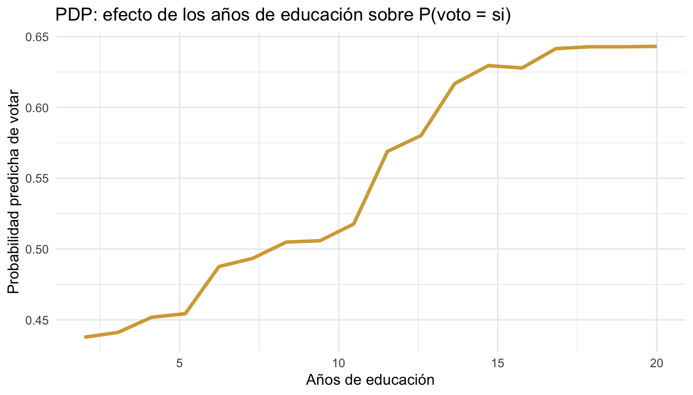
14 Threshold de clasificación
Por defecto, clasificamos como “si” cuando P(si) > 0.5. Pero podemos ajustar este umbral para optimizar distintas métricas.
# Probar varios thresholds
thresholds <- seq(0.3, 0.7, by = 0.05)
resultados_th <- data.frame(threshold = numeric(), f1 = numeric())
for (t in thresholds) {
pred_nuevo <- pred_rf_final |>
mutate(.pred_class_nuevo = factor(
ifelse(.pred_si > t, "si", "no"),
levels = c("si", "no")
))
f1 <- f_meas(pred_nuevo, truth = voto,
estimate = .pred_class_nuevo)
resultados_th <- rbind(resultados_th,
data.frame(threshold = t, f1 = f1$.estimate))
}
# Ver resultados ordenados por F1
resultados_th |> arrange(desc(f1)) threshold f1
1 0.40 0.7591241
2 0.45 0.7459016
3 0.35 0.7346939
4 0.30 0.7218543
5 0.50 0.6991150
6 0.55 0.6536585
7 0.60 0.5777778
8 0.65 0.4750000
9 0.70 0.4210526# Graficar
ggplot(resultados_th, aes(x = threshold, y = f1)) +
geom_line(colour = "#1E3A5F", linewidth = 1) +
geom_point(colour = "#D4A843", size = 3) +
labs(title = "F1-score por threshold de clasificación",
x = "Threshold", y = "F1-score") +
theme_minimal()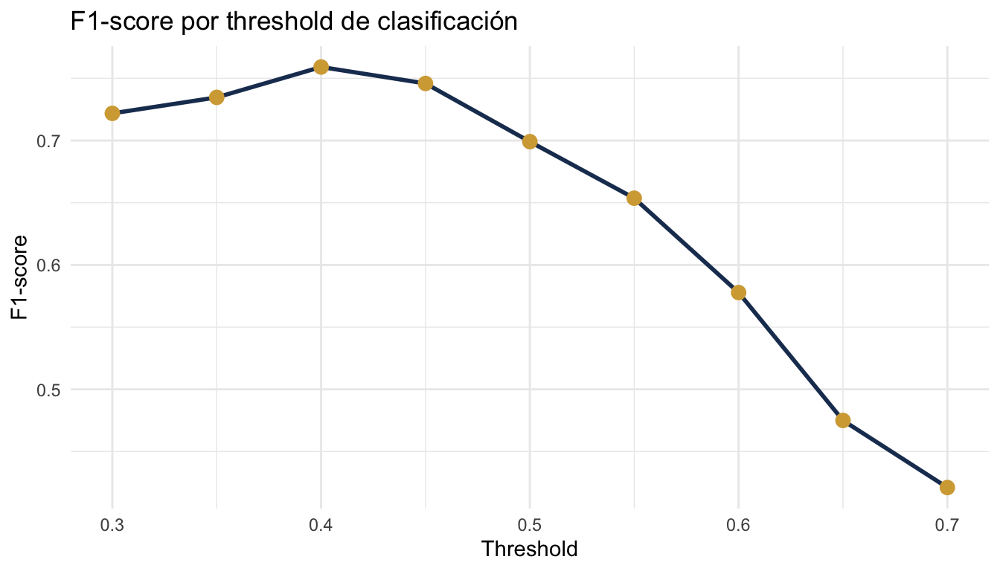
15 Resumen de funciones
La tabla siguiente resume las funciones principales del ecosistema tidymodels organizadas por etapa del flujo de trabajo.
| Etapa | Función | Descripción |
|---|---|---|
| Datos | initial_split() |
Dividir datos en train/test |
training(), testing() |
Extraer conjuntos | |
vfold_cv() |
Crear folds de validación cruzada | |
| Recipe | recipe() |
Definir preprocesamiento |
step_dummy() |
Crear variables dummy | |
step_normalize() |
Estandarizar numéricas | |
step_zv() |
Eliminar varianza cero | |
step_novel() |
Manejar categorías nuevas | |
step_impute_median() |
Imputar con mediana | |
step_other() |
Agrupar categorías raras | |
step_corr() |
Eliminar alta correlación | |
step_log() |
Transformación logarítmica | |
step_interact() |
Interacciones | |
step_poly() |
Polinomios | |
prep() |
Estimar parámetros del recipe | |
bake() |
Aplicar recipe a datos nuevos | |
| Modelo | logistic_reg() |
Regresión logística |
linear_reg() |
Regresión lineal | |
decision_tree() |
Árbol de decisión | |
rand_forest() |
Random Forest | |
boost_tree() |
XGBoost / Gradient Boosting | |
nearest_neighbor() |
K-Nearest Neighbors | |
set_engine() |
Motor computacional | |
set_mode() |
Clasificación o regresión | |
| Workflow | workflow() |
Crear flujo de trabajo |
add_recipe() |
Agregar recipe | |
add_model() |
Agregar modelo | |
fit() |
Ajustar a datos | |
predict() |
Generar predicciones | |
last_fit() |
Ajustar y evaluar en un paso | |
| Tuning | tune() |
Marcar hiperparámetro para ajustar |
tune_grid() |
Buscar en grilla con CV | |
grid_regular() |
Grilla con valores uniformes | |
grid_random() |
Grilla con valores aleatorios | |
collect_metrics() |
Extraer métricas del tuning | |
select_best() |
Elegir mejor combinación | |
select_by_one_std_err() |
Elegir modelo simple dentro de 1 SE | |
finalize_workflow() |
Aplicar mejores hiperparámetros | |
| Evaluación | accuracy() |
Proporción correcta |
roc_auc() |
Área bajo curva ROC | |
precision() |
Precisión | |
recall() |
Sensibilidad | |
f_meas() |
F1-score | |
conf_mat() |
Matriz de confusión | |
roc_curve() |
Curva ROC | |
metric_set() |
Definir conjunto de métricas | |
tidy() |
Coeficientes en formato tidy | |
| Interpretación | vip() |
Importancia de variables |
partial() |
Dependencia parcial | |
extract_fit_parsnip() |
Extraer modelo del workflow | |
extract_fit_engine() |
Extraer modelo nativo |